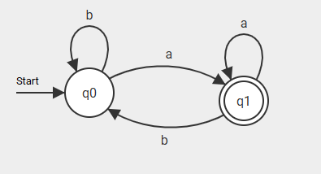

Automaten und
Chomsky-Hierarchie
- Left/Right Arrow Key - Move Slides
- Up/Down Arrow Key - Extra Slides
- O - Overview
Wiederholung
- Alphabet: Menge an Zeichen
- Wort: Endliche Zeichenfolge aus einem Alphabet
- Sprache: Menge an Wörtern über ein Alphabet
Was ist ein Automat?
- Befindet sich immer in genau einem Zustand
- Liest Zeichen ein und ändert Zustand
Arten von Automaten
- Nichtdeterministisch
- Transitionssysteme
- Akzeptoren
- Transduktoren
Endlicher Automat (DEA)
- Zustände (endliche Menge an Zuständen) Q
- Eingabealphabet; Σ = { a, b }
- Übergangsfunktion
- Startzustand (Element von Q)
- Nichtleere Teilmenge von Q der akzeptierenden Endzustände
Darstellung als Graph


?
Chomsky Hierarchie

Quellen
- https://www.mathematik.uni-marburg.de/~thormae/lectures/ti1/ti_7_4_ger_web.html#1
- https://info-wsf.de/akzeptor/
- https://homepages.thm.de/~hg51/Veranstaltungen/VS-13/Folien/vs-03.pdf
- https://hpi.de/friedrich/teaching/units/endliche-automaten.html
- https://formal.kastel.kit.edu/teaching/FormSysWS0910/22EndlicheAutomaten.pdf